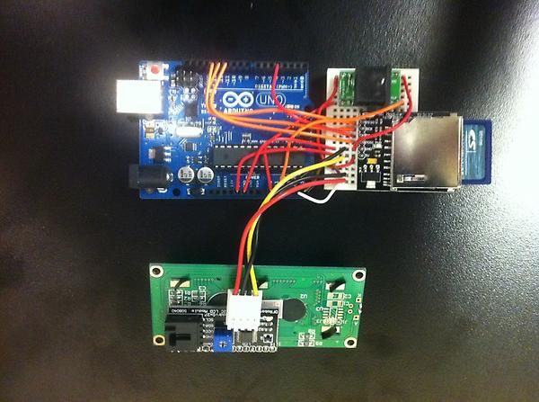
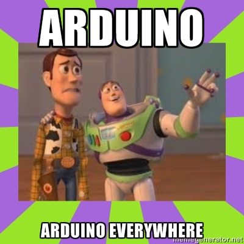

hardware hacking with arduino for fun and profit!
Jonathan Younker & Tim Ribaric
Brock University
Agenda:
- What is it?
- What's it good for?
- How does it work?
- Arduino in the Library
- Examples (show and tell)
- Let's make something!
What is it?
- A 'single board microprocessor
- Open source hardware
- Open source software
- Microcontroller (ATmega chips)
- Integrated Development Environment (IDE)
- Software: C or C++ (wait, don't leave!)
A Brief History of Arduino
- First built in 2005, in Ivrea, Italy
- Grew out of Wiring, a similar project
- Quickly became popular with makers/hobbyists
- Many different models, updates, features
How it works
Anatomy of an Arduino

What's it Good for?
- "Internet of Things"
- Small, low-power, low-cost applications
- Garduino
- Synthesizers
- Robotics
- Hacking
Speaking of Hacking
Why would i use this in a library?
- Community engagement
- To solve problems
- Why not?
Real-World Library Examples

The Barcodinator
- Problem
- Initial request
- Proposed solution
- Prototype
- Issues encountered
- Revisions
- Lessons learned
The Tabulatron
- Problem
- Initial request
- Proposed solution
- Prototype
- Issues encountered
- Revisions
- Lessons learned
The Tabulatron
Other potential Library applications:
- Face tracking i/o gate counts
- Web-enabled gate counts
- Gathering data about the library
- Physical interfaces for sign-ups
- ...
Let's make something!
How many laptops are left?
- Code it up
- Plug it in
- Upload the sketch
- Run it!
Questions?

- Jonathan Younker @jtyounker
- Tim Ribaric @elibtronic